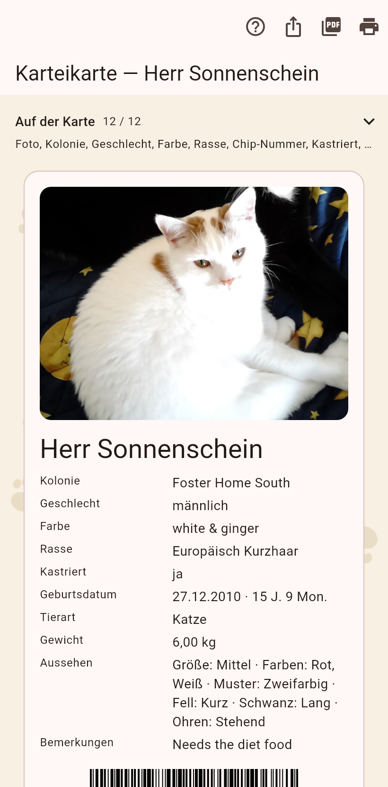

1. Die Karte
Aus der Leiste der Katze. Die Chips wählen, was erscheint; als Bild teilen, als PDF teilen oder drucken in der Leiste. Das Bild landet in jedem Messenger.

Die Karte ist das eine Blatt, das du jemandem gibst.
Aus der Leiste der Katze. Die Chips wählen, was erscheint; als Bild teilen, als PDF teilen oder drucken in der Leiste. Das Bild landet in jedem Messenger.
